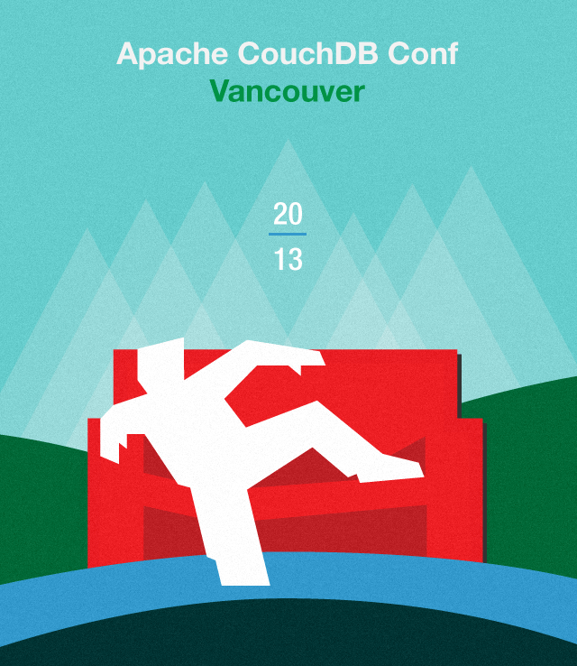
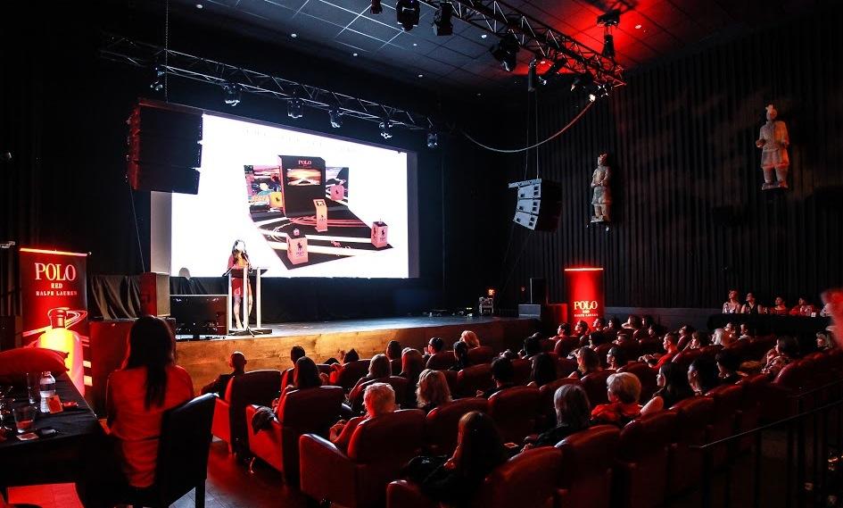

The CouchDB Conf brings together the passionate individuals who have contributed to the development of the database and community. CouchDB Conf is where 200+ influential developers, technology evangelists, will gather to learn about CouchDB and related technologies, covering everything from getting started to advanced features and internals, app development, and best practices.
As an additional incentive to attend, Apache CouchDB Conf is happening the day before CascadiaJS (November 14-15, 2013) at the same venue. Because of the overlap between the JavaScript and CouchDB communities, the back-to-back conferences provide a single destination for developers of data-driven web apps. CouchDB Conf is also one of the many events taking place as part of Vancouver Developer Week.
CouchDB Conf is a one day event. Tickets are on sale now! Standard ticket prices are $150 and includes access to the full day’s event and reception with CascadiaJS.
At Apache CouchDB Conf Vancouver, participants will learn about CouchDB and related technologies, covering everything from getting started to advanced features and internals, app development, and best practices. Attendees will also get updates on other projects in the community, including PouchDB.
| Time | Program |
|---|---|
| 8:30-9:30am | Breakfast & Registration |
| 9:30-10:00 | Welcome & Opening Remarks |
| 10:00-11:00 | Keynote |
| 11:00-12:00pm | Sessions |
| 12:00-1:00 | Lunch |
| 1:00-1:30 | Sessions |
| 2:30-3:00 | Break |
| 3:00-4:30 | Sessions |
| 4:30-5:00 | Closing Remarks |
| 5:00-7:00 | Reception with CascadiaJS |
CouchDB Conf is a great opportunity to receive targeted exposure to a group of developers, technology leaders, and decision makers active in the open source database community.
Whether your goal is to support the community, develop partnerships, or make contacts, CouchDB Conf is the perfect platform. Sponsorship of CouchDB Conf offers a unique opportunity to both support and reach a dedicated group of highly engaged, influential developers in a volunteer-run community.
The CouchDB Conf will be held at The Imperial, a multi-purpose venue in Vancouver, Canada. The Imperial was originally a Chinese language house and was known for kung-fu movies. After a multi-million renovation in 2007, The Imperial opened as a multi-purpose venue and state of the art theater. It will serve as the venue for both CouchDB Conf and CascadiaJS.
CouchDB Conf Berlin January 2013